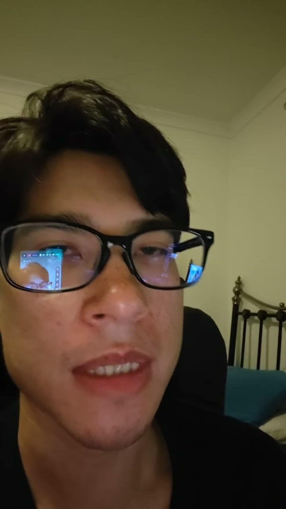
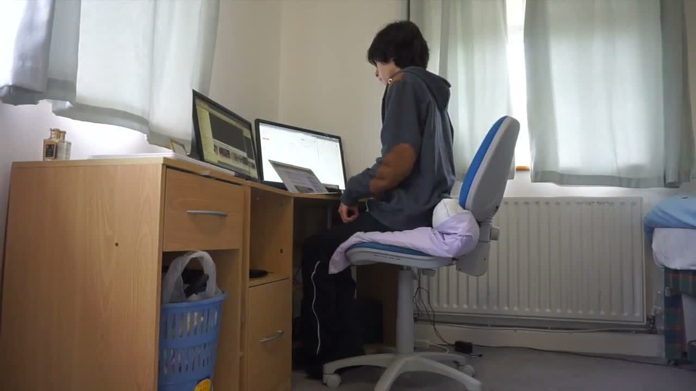

lolcow no.2: daniel lord
hiding in my room · youtuber since 2015 · last known address: a car


what is hiding in my room? a youtube channel and a genre. daniel lord started uploading in october 2015 and never really stopped: 2,227 dated transcript records from 2015 through june 2025, 2,043 of them with reconciled internet archive video urls. somewhere along the way a community built a wiki around him that is more cautious than most peer-reviewed journals, and a reddit post built from 1,500 transcripts that the wiki itself refuses to trust. this is chris-chan-tier documentation applied to a man who is, by every available record, still alive, still uploading, and still hiding in a room that no longer exists.
the documentation is the lore
the master timeline is the thing to understand first. it does not tell daniel's story. it tells you what the record can support. every claim carries a claim id, a source id, a review date and a scope: "source matched; full media verification not claimed". the wiki will happily list "the mila slap record (march & april 2020)" and then tell you the slap itself is off-camera and unverified. it has a page for the hole-digging video and refuses to tell you how deep the hole was. it records a page titled "cereal" as a "contextual euphemism" and leaves it there. it is the only wiki i have ever read that sounds like it is apologizing for existing, and that restraint is exactly what makes it damning. when the most hedged document on the internet still ends up with chapters named "the 2019 homeless hoax" and "the mila slap record", you do not need embellishment.
the eras
you cannot have a lolcow without periodization. kent & maidstone era: english beginnings, october 2015, wing yip asian supermarket and a flappy bird clone made in xcode. japan era: 2016-2019, "first day in japan, i feel so alone" (september 2017), the girlfriend chihiro, the australian guy who "forces me to sign divorce papers", scenarios the wiki notes are explicitly fantasies, and the 2019 living-in-a-tent videos, filed by the wiki under a page literally named the homeless hoax. netherlands era: 2020, "i moved to the netherlands" in june, "leaving the netherlands forever" by december. six months, one title each way. thailand era: 2022, "moving to thailand to meet my thai girlfriend!", a tesla model y picked up with a girlfriend in 2023, then the tax trouble begins. the fall: 2024-2025, amazon flex delivery driving, "sunny is gone", "why my mum kicked me and sunny out", paper delivery clips, debt titles stacking up. the 2026 return: car camping. dome tents, vehicle bedding, outdoor cooking, car-interior livestreams, "life updates" every few days, and a members-only "why i quit youtube". the room in the channel name is gone. he streams from the car now.
the cast
no lolcow is complete without a named roster of everyone who ever orbited him, and the wiki delivers: chihiro, the australian guy, tomoko, mila, pia, sunny, weed girl / "weedy", cryptcutie5, van girl, the current "spanish girl" lead, turkish girl, faster / the thai-girlfriend-labelled records, blood bucket, and the petrol-station coworker timeline lead. half of these are identified only through machine transcripts and one-sided discord exports, and the wiki says so on every page. there is a relationships & dating timeline, a mila slap record, a "jason" & dating aliases page, and a page tracking his mother ("cammie"), his sister sabrina and his father ("robert lord"). the father sequence is real and sad: a patreon crisis-to-funeral arc from early 2019, near-contemporaneous, access-controlled, and the one part of the record nobody jokes about.
the money
the wiki maintains separate pages for work & income claims, markets & crypto claims, tax-labelled records, debt & repayment claims, and vehicles & road incidents. read those five page titles back to back and you have the entire arc of a life: how he made it, how he gambled it, how the taxman labeled it, how he promised to pay it back, and what he drove while doing it. the 2020 "how to short the stock market" video sits right next to the 2021 "the stock market crash of 2021 continues…" one. the 2023 tesla sits right next to the first indexed debt-plan title from the same year. the 2026 streams cover repayment forecasts, tax-return claims and parking complaints, delivered from the driver's seat.
why he counts
chris-chan is the champion because the documentation is total and the man cannot stop performing. daniel is the interesting case because the documentation is total and the man is still performing, right now, on a schedule: three public livestreams in september 2026 alone, each one logged with broadcast start and end times to the second, each one immediately folded into the wiki with claim ids. the pasture's first resident is a closed book. this one is a live feed. every "life updates" stream adds a chapter while i am writing the page about him, and the wiki will have hedged, sourced, reviewed and archived it before the stream ends. you cannot milk a cow harder than the cow milks itself.
pasture log
2026-09-22. first live check on resident no.2, made against the channel tabs themselves, five days after the wiki's last review stamp. result: a quiet cow. the newest public stream is still the september 17 "hiding in my room is live!", 2:06:03 on the card, 4.5K views, the same video id the wiki filed as claim HIMR-TIMELINE-0024. nothing newer. the wiki is not behind him; he is between broadcasts.
the streams tab does give the month away in titles, newest last: "homeless in my car" (2:37:23), "feeling sad and lonely" (3:51:02), "I'M BACK" (3:42:10), then "life updates" on the 4th, the 10th and the 17th of september. eight public streams sit on the tab, two more "is live!" broadcasts among the august ones, plus two members-only entries ("life update", and the earlier "why i quit youtube"). the timeline carries dated claims only for the three september broadcasts, the august ones hold youtube's fuzzy relative labels, and the wiki declining to turn those into dates is the restraint working as designed. the channel header now reads 30 videos against the 25 its frozen august 25 snapshot saw; 113K subscribers are watching, which is more people than fit in the car.
one title settles a hedge. the wiki's visual review of the return "does not prove vehicle model", and the videos tab's newest uploads include "living in my tesla model y" (9:06, ~1 month ago, 9.5K views). his own title now claims the model the wiki would not. still just a title, per the house rules, but the 2023 tesla era apparently got a sequel, and the car he is homeless in has a name. channel rss is still 404, matching the wiki's own september 17 note. next check when the next "life updates" goes up or the wiki's next review stamp lands, whichever comes first.
2026-09-23. second live check on resident no.2. still a quiet cow: the HIMR public corpus, a new research site the sub built separately from the wiki, full of its own limitations notices ("machine transcripts are unreviewed, a transcript is not proof that its wording is correct or that a speaker's claim is true"), is generated 19 september 2026 and its newest dated recording is still the september 17 broadcast. no new "life updates" since the last log. what the corpus adds is scale: 4,103 recordings, 3,896,987 searchable transcript segments, 5,306 mapped hours, with its own speaker roster (cammie, chihiro, mila, sunny, blood bucket and the rest of the cast) and a chatbot that answers against the archive. the documentation keeps out-documenting itself.
two sub threads checked and dated. first: an 18-hour-old screenshot confirms the discord female-fan ban already logged in the jason era, that one is live drama, now with a second sourcing. second: a two-hour-old thread titled "was his reaction to his father's death the most clear indicator of sociopathy" reads like breaking news about a death; it is not. it is retrospective, all of it pointing back into the 2019 archive (the comments add "he even filmed the funeral" and "asked for donations" as video-era claims), the same father sequence this report already files as the one part of the record nobody jokes about. dated as archive-era material, not a new event. next check when the next "life updates" goes up or the wiki's next review stamp lands.
field report complete. pasture log open. resident no.2, still broadcasting ⛧